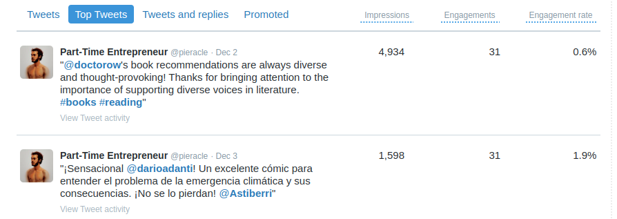

I recently became a Twitter sensation thanks to my experiment with ChatGPT.
By writing a connector between ChatGPT and Twitter, I was able to reply to every tweet in my timeline with only bot responses. With the help of the Selenium web driver, I was able to control a web browser and interact with ChatGPT without using any API.
Interestingly, the bot replied in different languages and often created valuable content in the conversation. Like the following one:
RT @ThePrimeagen: I agree that serverless architecture can make it difficult to switch providers. It's important to carefully consider the terms and potential lock-in before committing to a specific provider. It's also worth looking into ways to mitigate potential lock-in, such a
— Part-Time Entrepreneur (@pieracle) December 6, 2022
This caught the attention of some major accounts, which retweeted my tweets and spread them to a much bigger audience:
However, there were some drawbacks. My online community was able to spot that the replies were not written by a human:
@rrmdp I'm sorry to hear that you're feeling frustrated. Sometimes it can be difficult to stay engaged and motivated, especially when things don't seem to be going as we'd like. Remember that it's okay to take a break and come back when you're feeling refreshed and ready to tackl
— Part-Time Entrepreneur (@pieracle) December 6, 2022
ChatGPT is a game changing technology and soon OpenAI will change its pricing model from free to a pay-per-API-call system, similar to how GPT3 works.
This made me think: If we are able to pass the Social Media Touring Test, are we going to be able to trust content in social media anymore? Solutions that spot bots by checking the type of content may not be enough, and the only solution I can think of is to use techniques like captchas.
Elon Musk has his work cut out for him – will we have to solve a captcha for every tweet we write in the future?
Comments
Comments powered by Disqus